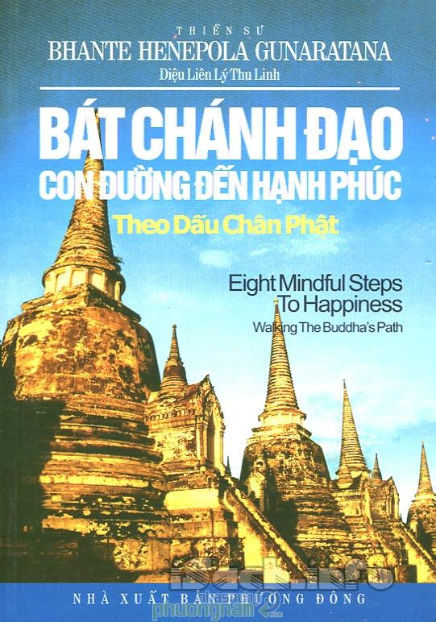

« Back
Bát Chánh Đạo - Con Đường Đến Hạnh Phúc
By Bhante Henepola Gunaratana

Về Tác Giả.
Lời Cảm Tạ Của Tác Giả.
Lời Người Dịch.
Lời Nói Đầu.
Đơn Giản Hóa Cuộc Sống.
Rèn Luyện Sự Tự Kiềm Chế.
Vun Trồng Tâm Thiện.
Tìm Minh Sư Và Học Hỏi Giáo Lý.
Khởi Đầu Của Sự Thực Hành Chánh Niệm.
Tọa Thiền.
Đối Phó Với Cái Đau.
Hãy Chú Tâm.
Một Phút Chánh Niệm.
Bước 1: Chánh Kiến.
Bước 2: Chánh Tư Duy.
Bước 3: Chánh Ngữ.
Bước 4: Chánh Nghiệp.
Bước 5: Chánh Mạng.
Bước 6: Chánh Tinh Tấn.
Bước 7: Chánh Niệm.
Bước 8: Chánh Định.
Lời Kết: Lời Hứa Khả Của Đức Phật.